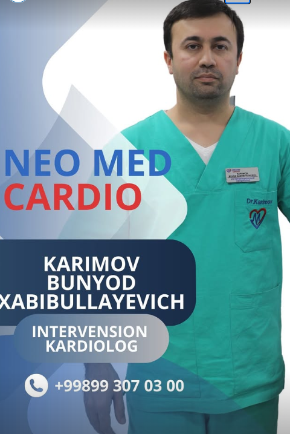
Shoshilinch yordam 24/7
Toshkent · Chilonzor
Yuragingiz uchun aniq tashxis, tezkor yordam.
Neo Med Cardio — kardiologiya, pulmonologiya va umumiy diagnostikaga ixtisoslashgan ko'p tarmoqli klinika.
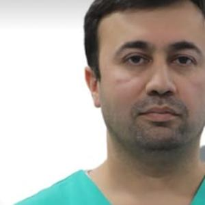
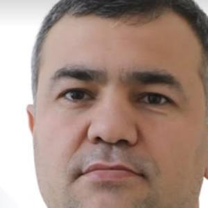
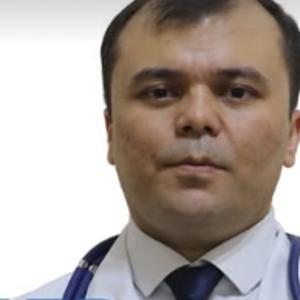
Tajribali va malakali shifokorlar
7+ mutaxassis xizmatingizda
2019
yildan buyon ishlaymiz
120
o'rinli statsionar
35000+
davolangan bemor
24/7
reanimatsiya va tez yordam
🇹🇷
Xalqaro hamkorlik
Klinikamizda Turkiyalik taniqli kardiolog, professor Şevket Görgülü ishtirokida murakkab yurak jarrohlik amaliyotlari muntazam o'tkaziladi.
Yo'nalishlar
Bitta klinikada — to'liq tibbiy yordam
Tashxisdan davolashgacha, poliklinikadan statsionargacha — barcha bosqichlar bir tomdan.
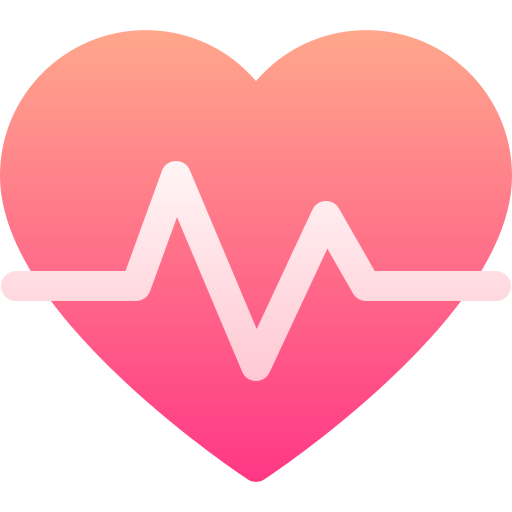
Kardiologiya
Yurak-qon tomir kasalliklarini diagnostika va davolash, koronarografiya, angiografiya.
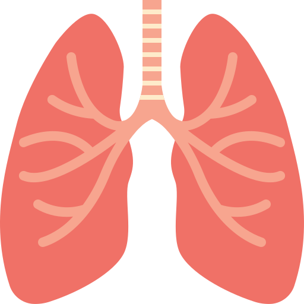
Pulmonologiya
Nafas yo'llari kasalliklari, bronxit, astma, quruq yo'tal diagnostikasi va davolash.
Statsionar
120 o'rinli qulay palatalar, 24 soatlik tibbiy nazorat ostida davolanish.
Reanimatsiya
Zamonaviy uskunalar bilan jihozlangan intensiv terapiya bo'limi.
Diagnostika
MRT, MSKT, rentgen, UZI, EKG, fibroskan — bir kunda to'liq tekshiruv.
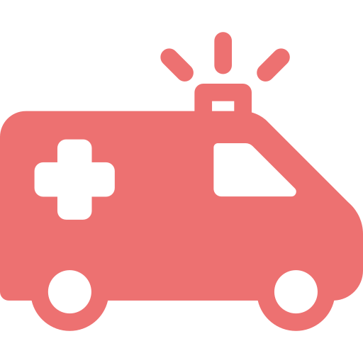
Tez tibbiy yordam
Tezkor chiqish va shoshilinch gospitalizatsiya, kuniga 24 soat.
Jamoamiz
Tajribali va malakali shifokorlar
Har bir bemorga individual yondashuv — aniq diagnostika va zamonaviy davolash standartlari asosida.
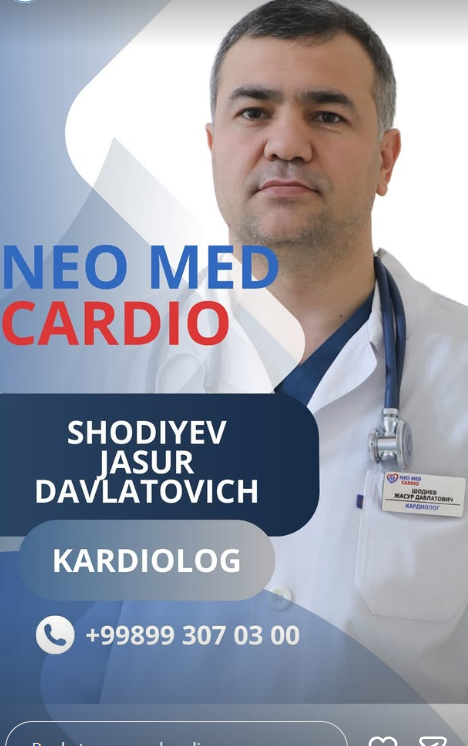
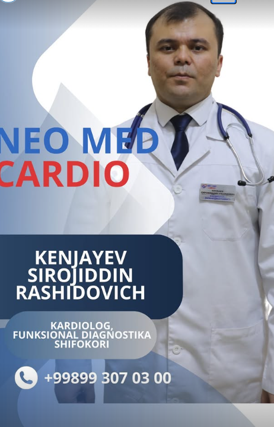
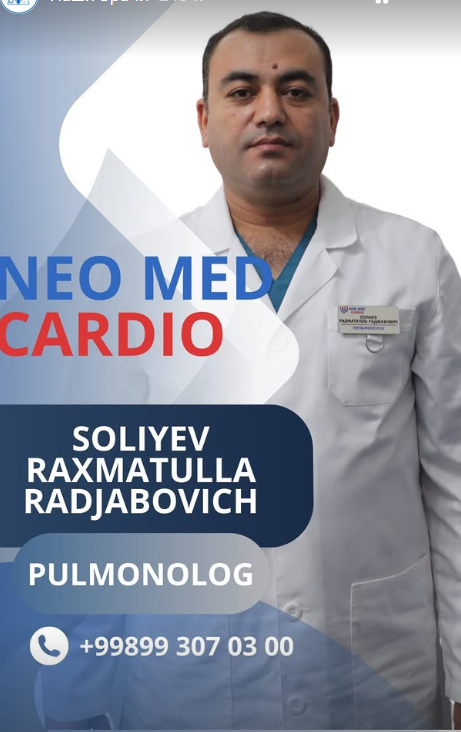
Nega aynan biz
Ishonch va aniqlik ustida qurilgan
24/7 klinika
Statsionar va reanimatsiya kuniga 24 soat, haftaning 7 kuni faoliyat yuritadi.
Xalqaro hamkorlik
Turkiyalik professor-kardiolog ishtirokida murakkab jarrohlik amaliyotlari.
Zamonaviy uskunalar
MRT, MSKT va boshqa yuqori aniqlikdagi diagnostika uskunalari bir joyda.
Individual yondashuv
Har bir bemor uchun shaxsiy davolash rejasi va doimiy nazorat.
Klinika ichidan
Zamonaviy jihozlangan kabinetlar
LOR, kardiologiya va diagnostika kabinetlarimiz eng so'nggi uskunalar bilan jihozlangan.
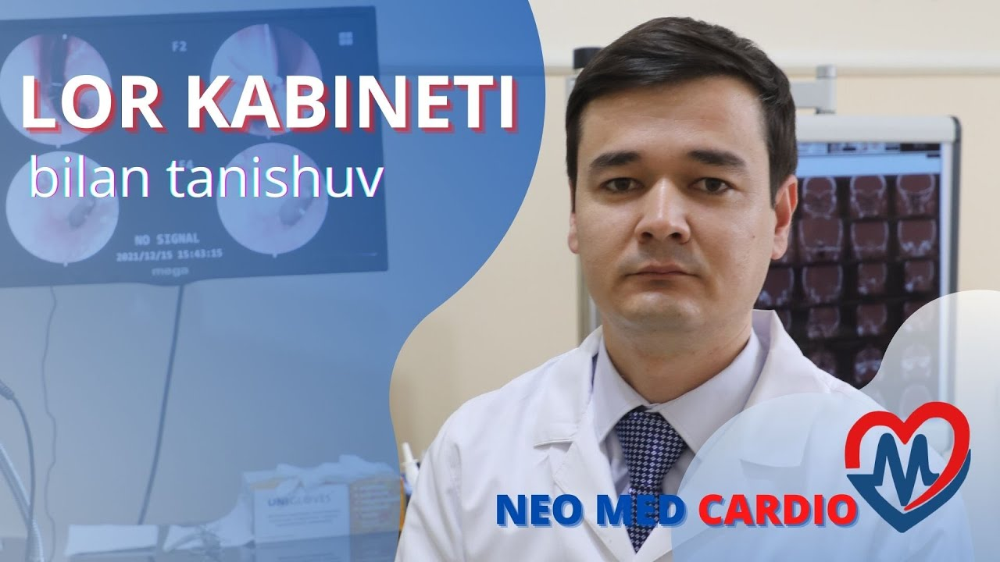
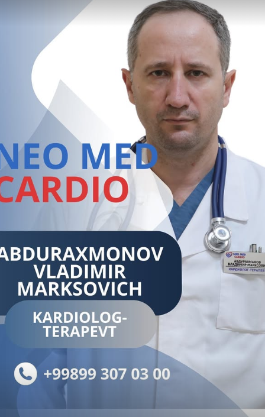
120+
o'rinli statsionar
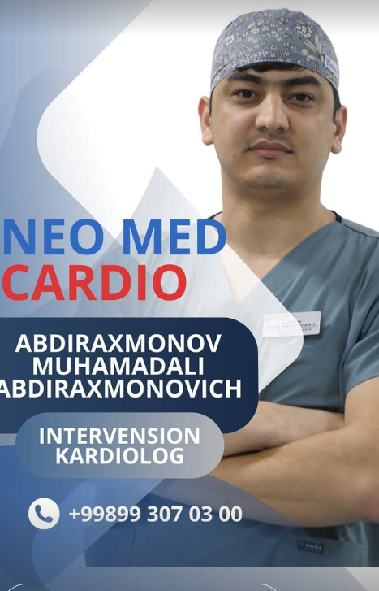
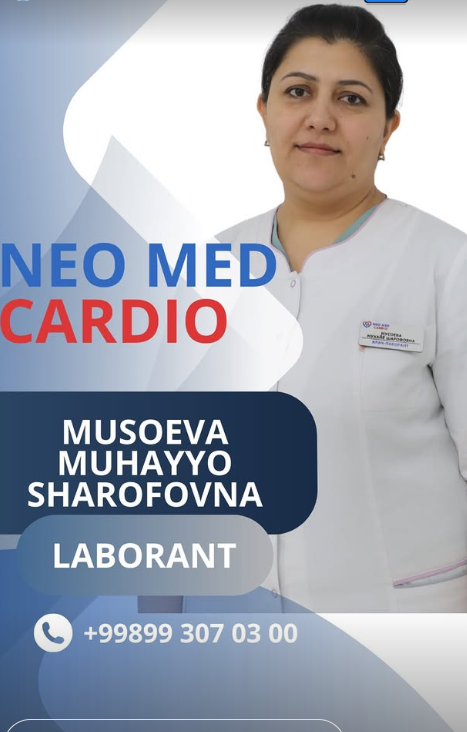
Qanday yoziladi
3 qadamda qabulga yozilish
01
Bog'laning
Telefon yoki Telegram bot orqali murojaat qiling.
02
Shifokor tanlang
Administrator sizga mos mutaxassis va vaqtni tavsiya qiladi.
03
Qabulga keling
Belgilangan vaqtda klinikaga tashrif buyuring.
Savollar
Ko'p beriladigan savollar
Telefon orqali, Telegram bot yoki klinikaga bevosita tashrif buyurib yozilishingiz mumkin.
Ha. Poliklinika belgilangan ish vaqti asosida qabul qiladi, statsionar va reanimatsiya esa 24 soat davomida faoliyat yuritadi.
MRT, MSKT, rentgen, UZI, EKG, koronarografiya, angiografiya, EFGDS va fibroskan tekshiruvlarini o'tkazamiz.
To'lovlarni naqd pul, bank kartasi yoki onlayn to'lov tizimlari orqali amalga oshirish mumkin.
Ha, shoshilinch holatlarda qo'ng'iroq qiling — jamoamiz tezkor chiqadi.
Sog'lig'ingiz — bizning ustuvorligimiz
Hoziroq qo'ng'iroq qiling yoki Telegram orqali yozib qoldiring — kerakli shifokorga yo'naltiramiz.